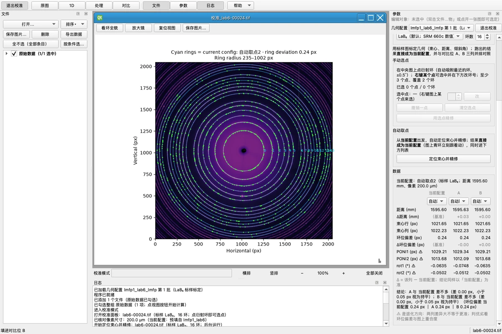
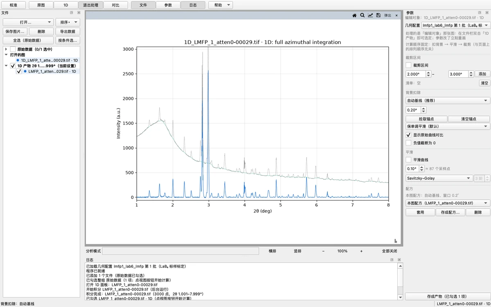
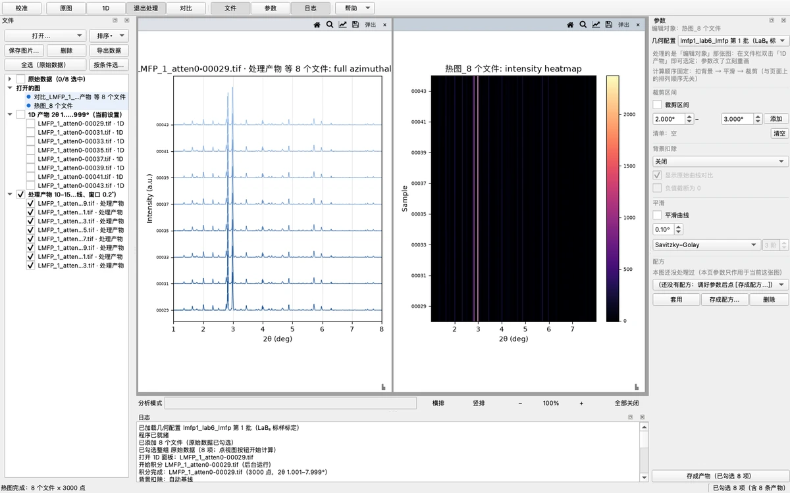
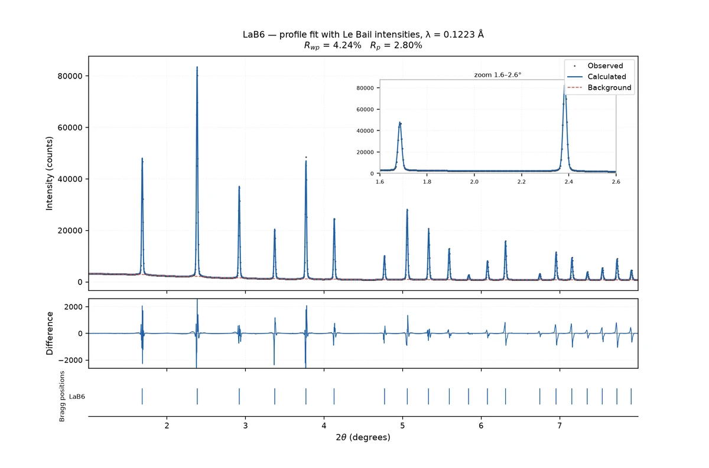

Capabilities
从原始图像到精修结果
一条链路覆盖校准、积分、分析、批量与模拟；命令行和桌面界面共用同一套引擎。
校准与 2D → 1D 积分
LaB₆、CeO₂、Si 等标样做 pyFAI 几何精修，0°–360° 完整方位角积分，输出标准两列粉末谱。
背景、平滑与裁剪
空扫相减、自动基线、手动锚点；滑动平均 / Savitzky–Golay 平滑与区间裁剪，负值默认保留。
批量对比与热图
整文件夹积分，产物按阶段缓存；对比曲线、堆叠视图与 2θ × 样品热图，两下点击出图。
寻峰与单峰拟合
稳健噪声估计自动寻峰；Gaussian / Lorentzian / pseudo-Voigt / split-Pearson VII 拟合，附 Scherrer 与 Williamson–Hall 分析。
全谱拟合
Thompson–Cox–Hastings 峰形，Le Bail 或结构精修，支持额外相、原子坐标与位点占位精修、坏点掩膜。
CIF 理论谱模拟
布拉格定律 + 结构因子手写实现，带 (hkl) 标注；与 pymatgen 参考计算逐峰对拍。
Showcase
实际跑出来的样子
真数据截图，不是示意图：校准、背景、批量对比与全谱拟合。




Download
下载即用
不用装 Python，解压后双击。链接始终指向最新版本。
Windows 10 / 11XRD-Toolkit-windows.zip
Mac（Apple Silicon）M1 / M2 / M3 / M4
Mac（Intel）XRD-Toolkit-macos-intel.zip
应用未做系统签名，第一次打开会被系统拦截一次：Windows 点「更多信息 → 仍要运行」；macOS 右键 →「打开」。安装包约 110 MB，包含完整计算环境。如果无法访问 GitHub，请直接联系把本页发给你的人获取安装包。
Docs & feedback
文档与反馈
从快速上手到实现细节，遇到问题可以直接开 issue。